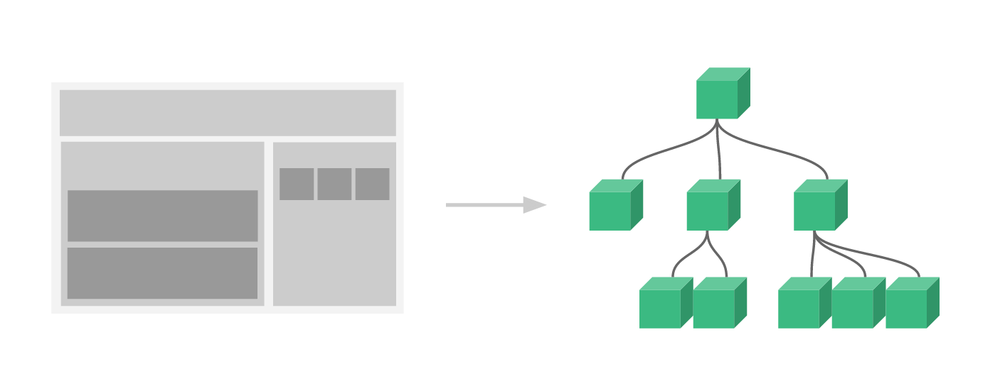

Vue.js コンポーネント
コンポーネント（Component）は Vue.js の最も強力な機能の 1 つです。
コンポーネントは HTML 要素を拡張し、再利用可能なコードをカプセル化できます。
コンポーネントシステムにより、独立した再利用可能な小さなコンポーネントを使って大規模なアプリケーションを構築できます。ほぼすべての種類のアプリケーションのインターフェースは、コンポーネントツリーとして抽象化できます：

グローバルコンポーネントを登録する構文形式は次のとおりです：
Vue.component(tagName, options)
tagName はコンポーネント名、options は設定オプションです。登録後、次の方法でコンポーネントを呼び出すことができます：
<tagName></tagName>
グローバルコンポーネント
すべてのインスタンスがグローバルコンポーネントを使用できます。
グローバルコンポーネントのインスタンス
簡単なグローバルコンポーネント runoob を登録して、それを使用します：
試してみる »
ローカルコンポーネント
インスタンスオプションでローカルコンポーネントを登録することもできます。この場合、コンポーネントはこのインスタンス内でのみ使用できます：
ローカルコンポーネントのインスタンス
簡単なローカルコンポーネント runoob を登録して、それを使用します：
試してみる »
Prop
prop は、子コンポーネントが親コンポーネントから渡されたデータを受け取るためのカスタム属性です。
親コンポーネントのデータは props を介して子コンポーネントに渡す必要があります。子コンポーネントは props オプションで明示的に "prop" を宣言する必要があります：
Prop インスタンス
試してみる »
動的 Prop
v-bind を使用して HTML 属性を式にバインドするのと同様に、v-bind を使用して props の値を親コンポーネントのデータに動的にバインドできます。親コンポーネントのデータが変化するたびに、その変化は子コンポーネントにも伝わります：
Prop インスタンス
試してみる »
次のインスタンスでは、v-bind ディレクティブを使用して todo を繰り返しの各コンポーネントに渡しています：
Prop インスタンス
試してみる »
注意: prop は単方向バインディングです。親コンポーネントの属性が変化すると、その変化は子コンポーネントに伝わりますが、逆方向には伝わりません。
Prop 検証
コンポーネントは props に検証要件を指定できます。
prop の検証方法をカスタマイズするには、props の値に文字列配列ではなく、検証要件を持つオブジェクトを指定できます。例：
Vue.component('my-component', {
props: {
// 基础的类型检查 (`null` 和 `undefined` 会通过任何类型验证)
propA: Number,
// 多个可能的类型
propB: [String, Number],
// 必填的字符串
propC: {
type: String,
required: true
},
// 带有默认值的数字
propD: {
type: Number,
default: 100
},
// 带有默认值的对象
propE: {
type: Object,
// 对象或数组默认值必须从一个工厂函数获取
default: function () {
return { message: 'hello' }
}
},
// 自定义验证函数
propF: {
validator: function (value) {
// 这个值必须匹配下列字符串中的一个
return ['success', 'warning', 'danger'].indexOf(value) !== -1
}
}
}
})
prop の検証に失敗した場合、（開発環境ビルドバージョンの）Vue はコンソールに警告を出力します。
type には次のネイティブコンストラクタを指定できます：
StringNumberBooleanArrayObjectDateFunctionSymbol
type にはカスタムコンストラクタを指定することもでき、instanceof で検出されます。
その他の拡張
木の上の魚
ggq***7618@163.com
親コンポーネントから子コンポーネントに値を渡すとき、変数を渡したい場合は、次のように記述します：
// 注册 Vue.component('child', { // 声明 props props: ['message'], // 同样也可以在 vm 实例中像 "this.message" 这样使用 template: '<span>{{ message }}</span>' }) // 创建根实例 new Vue({ el: '#app', data:{ message:"hello", } })試してみる »
木の上の魚
ggq***7618@163.com
阿卡坤
404***770@qq.com
子コンポーネントが $emit によって親コンポーネントのメソッドをトリガーするとき、パラメータを渡す必要がある場合は、メソッド名の後にオプションのパラメータを追加でき、パラメータはカンマで区切ります。
例えば$emit("FunctionName")パラメータを渡す場合：$emit("FunctionName",[arg1,arg2...])。
methods: { incrementHandler: function (v) { if(v==1){ this.counter -= 1 this.$emit('increment',1) }else{ this.counter += 1 this.$emit('increment',2) } } }試してみる »
阿卡坤
404***770@qq.com
关关长语
324***7890@qq.com
発展 - コンポーネントの属性を調整することで、コンポーネントの表示などの内部属性を変更する方法。
Props（グローバル）を使用
グローバルにコンポーネントを定義
Vue.component('example1', { props: ['value'], template: '<button v-on:click="incrementHanlder">{{value}}</button>', // data: function () { // return { // count: 0 // } // }, methods: { incrementHanlder: function () { // this.count += 1 this.$emit('incretment') } } }) new Vue({ el: '#div_col', data: { total: 0 }, methods: { incretmentTotal: function () { this.total += 1 } } })試してみる »
关关长语
324***7890@qq.com
holiday
597***772@qq.com
あなたが探しているかもしれないシステムクリックイベントの例。
<div id="app"> <p>点击元素输出元素内容:</p> <ol> <todo-item v-for="item in sites" v-bind:todo="item" @click.native="alert(item.text)"></todo-item> </ol> </div>試してみる »
holiday
597***772@qq.com
naivewood
zjx***tchi@163.com
<script src="https://cdn.staticfile.org/vue/2.2.2/vue.js"></script> <div id="app"> <example :propa="'asda'" :propb = "'aasasa'" :propc="'sdf'" :prope="{a:'a'}" :propf="100" ></example> </div> <script type="text/javascript"> Vue.component('example', { props: { // 基础类型检测 (`null` 意思是任何类型都可以) propa: Number, // 多种类型 propb: [String, Number], // 必传且是字符串 propc: { type: String, required: true }, // 数字，有默认值 propd: { type: Number, default: 1000 }, // 数组/对象的默认值应当由一个工厂函数返回 prope: { type: Object, default: function () { return { message: 'hello' } } }, // 自定义验证函数 propf: { type: Number, validator: function (value) { // 这个值必须匹配下列字符串中的一个 return value>0? -1:1 }, defalut:12 } }, template: ` <table border="1px"> <tr> <th>propA</th> <th>propB</th> <th>propC</th> <th>propD</th> <th>propE</th> <th>propF</th> </tr> <tr> <td>{{ propa }}</td> <td>{{ propb }}</td> <td>{{ propc }}</td> <td>{{ propd }}</td> <td>{{ prope }}</td> <td>{{ propf }}</td> </tr> </table>` }) new Vue({ el: "#app" }); </script>試してみる »
naivewood
zjx***tchi@163.com
zac
417***302@qq.com
参考URL
この例の実行プロセス注釈：
<!DOCTYPE html> <html> <head> <meta charset="utf-8"> <title>Vue 测试实例 - 菜鸟教程(runoob.com)</title> <script src="https://cdn.staticfile.org/vue/2.2.2/vue.min.js"></script> </head> <body> <div id="app"> <div id="counter-event-example"> // 6. 页面上更新total的值 <p>{{ total }}</p> // 4. 这里的自定义事件再次触发局域方法incrementTotal <button-counter v-on:increment="incrementTotal"></button-counter> <button-counter v-on:increment="incrementTotal"></button-counter> </div> </div> <script> // 1. 注册全局组件 Vue.component('button-counter', { // 2. button绑定点击事件incrementHandler template: '<button v-on:click="incrementHandler">{{ counter }}</button>', data: function () { return { counter: 0 } }, methods: { // 3. 点击事件触发后，再次触发自定义事件increment incrementHandler: function () { this.counter += 1 this.$emit('increment') } }, }) new Vue({ el: '#counter-event-example', data: { total: 0 }, methods: { // 5. 局域方法执行了total+1 incrementTotal: function () { this.total += 1 } } }) </script> </body> </html>zac
417***302@qq.com
参考URL